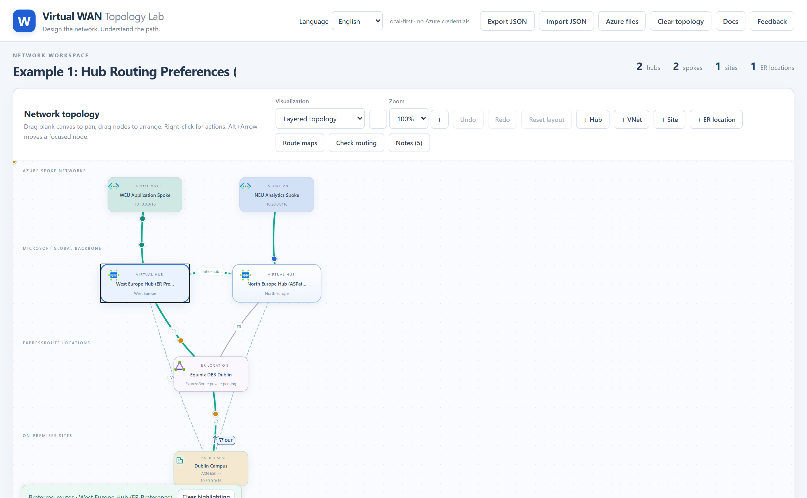
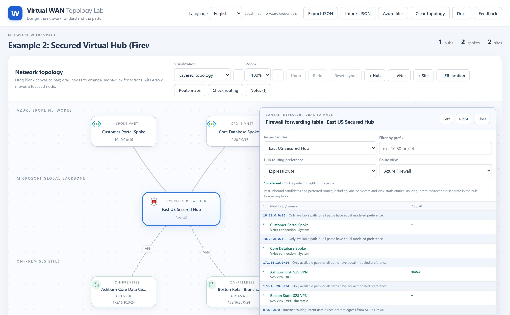
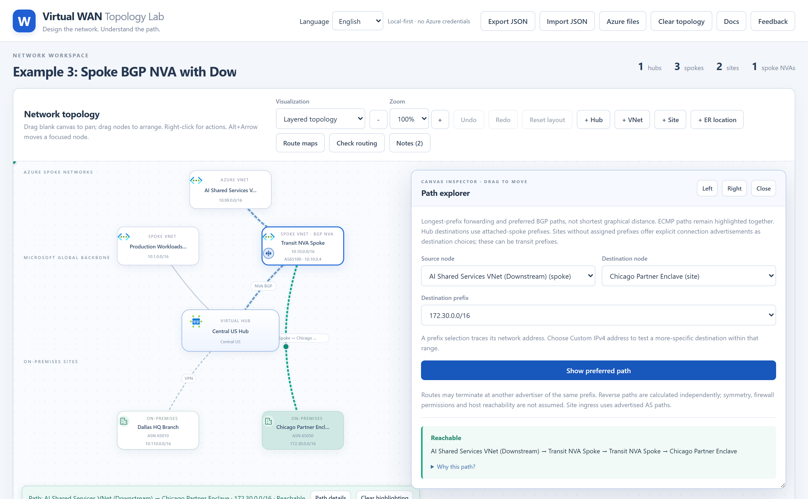
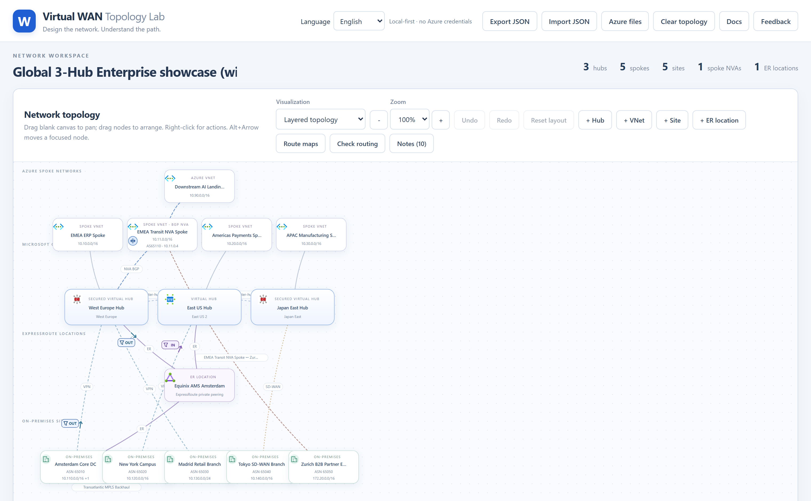
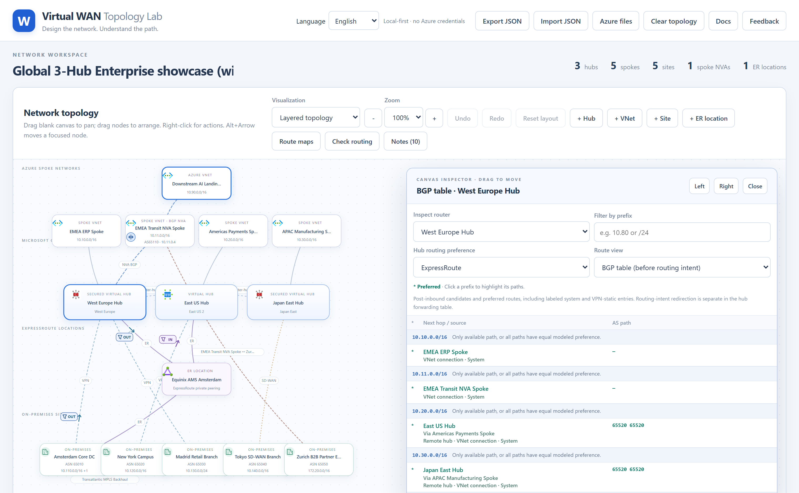
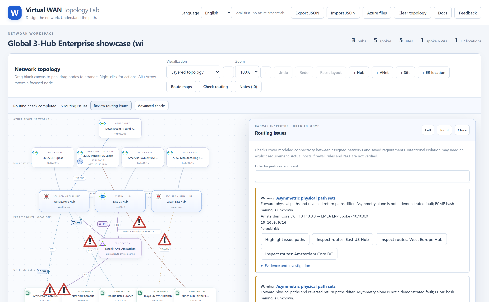
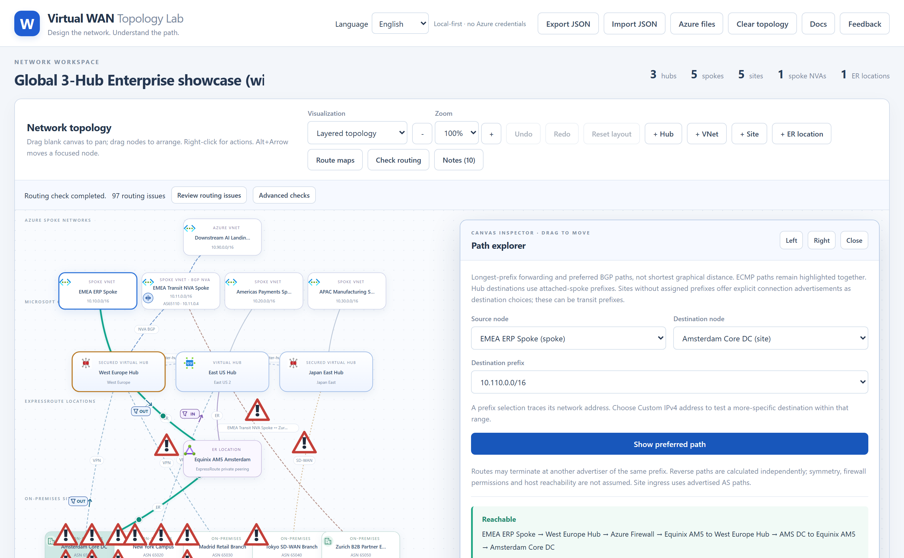
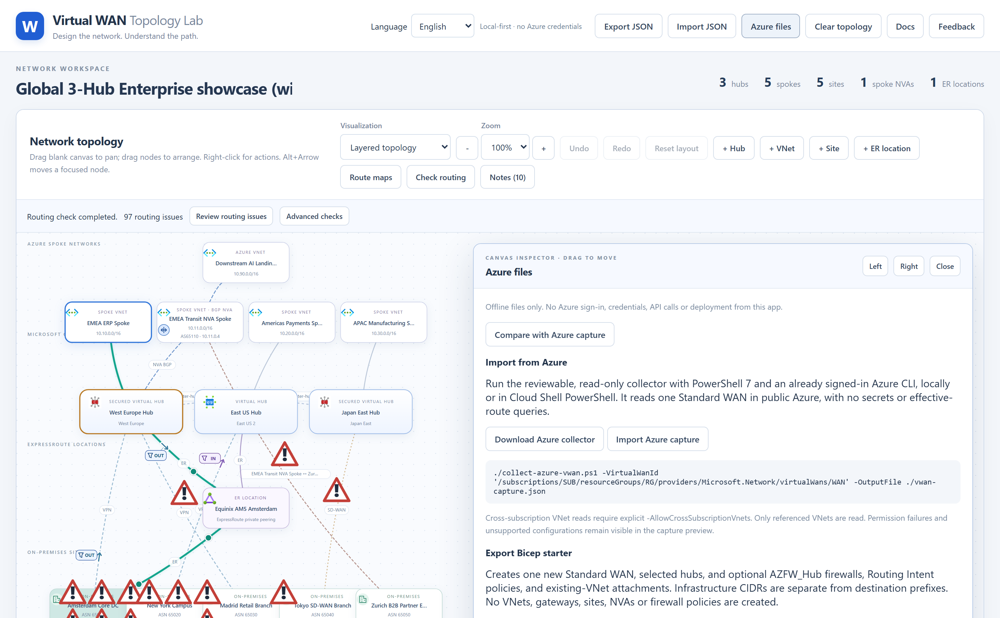

1. Overview & Key Concepts
Azure Network Simulator (AzNetSim) is a local-first topology designer and explainable planning simulator for classic Azure VNets, hub-and-spoke, Virtual WAN, and hybrid/on-premises networks. Simulation runs locally in the browser or Windows desktop without requiring Azure credentials. It is not a live Azure control plane or proof of packet delivery.
The detailed worked examples below focus on Virtual WAN. Explore classic hub-and-spoke or a mixed Virtual WAN and VNet topology for the broader scope. Saved designs stay separate per website origin; legacy files and links remain compatible.
Classic VNets & Hybrid Networks
Inspect VNet peering, subnets, UDRs, Azure Route Server, Firewall/NVA paths, Private Endpoints, ExpressRoute, and VPN alongside Virtual WAN.
Bounded Packet-Flow Planning
Explore modeled forward/return paths and supported NSG, NAT, ingress, Standard Load Balancer, Private Link and private proxy declarations. See packet and application scope; generic application delivery and live DNS are not implemented.
Hub Routing Preferences
Compare ExpressRoute, VPN, and ASPath hub routing preferences side-by-side and inspect the exact tie-breaker reason on every route.
Secured Hubs & Routing Intent
Model Azure Firewall Private Traffic (RFC1918 or custom CIDR prefixes) and Internet Traffic (0.0.0.0/0) routing intent plus opt-in default-route propagation.
Route Maps & BGP NVAs
Configure inbound/outbound route maps (drop, AS-path prepend, summarize) on hubs and sites, and peer Virtual Hubs with BGP NVAs in spoke VNets.
Automated Routing Diagnostics
Investigate modeled reachability, asymmetry, blackholes, firewall bypasses and dependencies. Review scope, completion and unassessed results rather than treating a bounded run as an exhaustive audit.
1. 概要と主な概念
Azure Network Simulator (AzNetSim) は、クラシック Azure VNet、ハブ＆スポーク、Virtual WAN、ハイブリッド／オンプレミス ネットワークを対象とする、ローカル ファーストのトポロジ デザイナー兼説明可能な計画用シミュレーターです。シミュレーションは Azure の資格情報を必要とせず、ブラウザーまたは Windows デスクトップ上で実行されます。実際の Azure コントロール プレーンやパケット配信を保証するものではありません。
以下の詳細サンプルは Virtual WAN を中心に説明します。より広い対応範囲は、クラシック ハブ＆スポークやVirtual WAN と VNet の混在構成で確認できます。保存データは Web サイトのオリジンごとに独立し、既存のファイルとリンクは引き続き利用できます。
クラシック VNet とハイブリッド ネットワーク
VNet ピアリング、サブネット、UDR、Azure Route Server、Firewall／NVA の経路、Private Endpoint、ExpressRoute、VPN と Virtual WAN を確認できます。
対応範囲を明示したパケット フロー計画
往路・復路と、対応する NSG、NAT、受信経路、Standard Load Balancer、Private Link、プライベート プロキシの宣言をモデル化します。対応範囲を確認してください。汎用的なアプリケーション配信や実際の DNS 問い合わせは未実装です。
ハブのルーティングの優先順位
ExpressRoute、VPN、ASPath の各ハブ ルーティング優先順位を比較し、すべてのルートで選択理由（タイブレーカー）を確認できます。
セキュリティで保護された仮想ハブとルーティング インテント
Azure Firewall によるプライベート トラフィック（RFC1918 またはカスタム CIDR）およびインターネット トラフィック（0.0.0.0/0）のルーティング インテントと、既定ルートの伝達をモデル化できます。
ルート マップとスポーク BGP NVA
ハブやオンプレミス サイトでのインバウンド / アウトバウンド ルート マップ（破棄、AS パス プリペンド、集約）や、スポーク VNet 内の BGP NVA ピアリングを構成できます。
自動ルーティング診断
モデル化した到達性、非対称ルーティング、ブラックホール、ファイアウォール バイパス、依存関係を調べます。範囲、完了状態、未評価の結果を確認し、制限付きの実行を網羅的な監査と解釈しないでください。
2. Step-by-Step Instructions
The compact UI uses one primary row: Tools, Learn, Explore, Checks, File, Azure, Settings and Help. Account and belt controls have their own targets. On smaller windows, Workspace actions reveals secondary commands; tabs and save status remain separate. Settings includes theme, language, canvas styles and Use legacy UI. Help opens Docs and Feedback, plus Windows app and MCP setup links on the web. Desktop Docs opens this bundled offline guide; feedback and cloud sharing are unavailable there.
The empty canvas has dismissible Add a resource, Open a design and Load an example shortcuts, not Windows/MCP promotional links. Selection shortcuts expose applicable configuration, route inspection, tracing and connections. Minimize them without losing selection; All actions opens the searchable Tools drawer. Right-click remains available.
Building or Editing a Topology
- Open a workspace: Start with an empty mixed-network design or open saved work through Workspace. There is no architecture-mode selector. Classic VNets and Virtual WAN hubs coexist; legacy Virtual WAN files and samples retain their compatible native editor.
- Add nodes: Use contextual workspace controls or right-click blank canvas to create the applicable hubs, VNets, sites, and ExpressRoute locations.
- Add optional custom node labels: Nodes support an optional
labeltext annotation (up to 120 characters). Edit it in the selected object's configuration dialog or inspector; legacy Virtual WAN objects expose Edit configuration → Optional diagram label. - Arrange the canvas: Drag any node to reposition it, drag blank canvas to pan, or switch between Layered topology and Network constellation views.
- Right-click any node or link for context actions:
- Hubs: Edit hub preference (
ExpressRoute,VPN,ASPath), enable Secured Virtual Hub Routing Intent, inspect the BGP table / Learned routes / Advertised routes / Firewall routes, or click Highlight preferred routes. - Spoke VNets: Attach a BGP NVA, attach downstream standalone Azure VNets or downstream on-premises sites behind the NVA, or configure spoke connection route maps.
- On-premises Sites: Connect to hubs via ExpressRoute, VPN (BGP or Static), or SD-WAN; add site-to-site WAN links; or configure site route maps and static routing tables. Adding an ExpressRoute connection automatically creates an ExpressRoute peering location between the hub and site.
- Hubs: Edit hub preference (
- Clear highlights & warning icons: Whenever path highlights or diagnostic warning/error icons are shown on the canvas, click Clear highlights & icons in the bottom-left corner of the canvas to reset the view.
- Save or load a design: Use Load, Save and Save As through File/document actions. See save and recovery and cloud backup and sharing. Old
#s=...links remain read-only snapshots; new full-topology links are not generated.
2. 基本的な使い方（ステップバイステップ）
コンパクト UI の主な操作は 1 行です。Tools（ツール）、Learn（学習）、Explore（探索）、Checks（診断）、File（ファイル）、Azure、Settings（設定）、Help（ヘルプ）を使用します。アカウントと帯は独立した操作です。狭いウィンドウではワークスペースの操作から補助コマンドを表示します。タブと保存状態は別に表示します。設定にはテーマ、言語、キャンバスのスタイル、従来の UI 切り替えがあります。ヘルプはドキュメントとフィードバック、Web 版では Windows アプリと MCP 設定を開きます。デスクトップ版は同梱オフライン ガイドを開き、フィードバックとクラウド共有は利用できません。
空のキャンバスには非表示にできるリソース追加、設計を開く、サンプル読み込みの操作があり、Windows/MCP の宣伝リンクはありません。選択時の構成、ルート確認、パス追跡、接続操作は選択を保持して最小化できます。すべての操作は検索可能なツール ドロワーを開きます。右クリックも利用できます。
トポロジの作成と編集
- ワークスペースを開く: 空の混在ネットワークから始めるか、ワークスペース (Workspace) で保存済み設計を開きます。モードの選択は不要で、クラシック VNet と Virtual WAN ハブを同じ設計に配置できます。従来の Virtual WAN ファイルとサンプルは互換性のあるエディターで開きます。
- ノードを追加: ワークスペースのコンテキストに応じた操作、または空白キャンバスの右クリックから、適用可能なハブ、VNet、サイト、ExpressRoute ピアリングの場所を追加します。
- ノードへのカスタム テキスト ラベル（任意）の追加: ノードには任意の
label（最大 120 文字）を設定できます。選択したオブジェクトの設定ダイアログまたはインスペクターで編集し、従来の Virtual WAN オブジェクトでは 構成を編集 → 図のラベル（省略可能） を使用します。 - キャンバスの配置と表示切替: ノードをドラッグして位置を調整したり、空白部分をドラッグしてパン移動したり、階層型トポロジ (Layered topology) と ネットワーク配置図 (Network constellation) を切り替えたりできます。
- ノードやリンクを右クリックしてコンテキスト メニューを表示:
- 仮想ハブ: ハブのルーティングの優先順位（
ExpressRoute、VPN、ASPath）の編集、セキュリティで保護された仮想ハブのルーティング インテントの有効化、BGP テーブル / 学習したルート / アドバタイズしたルート / ファイアウォールのルートを表示 の確認、または 優先ルートを強調表示 を実行できます。 - スポーク VNet: BGP NVA を追加 したり、NVA 配下のダウンストリーム VNet やオンプレミス サイトを追加したり、スポーク接続のルート マップを構成したりできます。
- オンプレミス サイト: ExpressRoute、VPN（BGP または静的）、SD-WAN でハブに接続したり、サイト間 WAN リンクを追加したり、ルート マップや静的ルーティングを構成したりできます。ExpressRoute 接続を追加すると、ハブとサイトの間に ExpressRoute ピアリングの場所が自動的に作成されます。
- 仮想ハブ: ハブのルーティングの優先順位（
- 強調表示と警告アイコンのクリア: キャンバス上にパス強調表示やルーティング診断の警告アイコンが表示されている場合は、キャンバス左下の 強調表示とアイコンをクリア (Clear highlights & icons) をクリックすると一括で消去できます。
- 設計の保存と読み込み: ファイル／ドキュメント操作の読み込み (Load)、保存 (Save)、名前を付けて保存 (Save As)を使用します。保存と復元、バックアップと共有を確認してください。既存の
#s=...は読み取り専用スナップショットとして利用でき、新しいトポロジ全体を含む URL は生成しません。
Save, Save As & Recovery
Each tab owns its topology, undo/redo, configuration drafts and destination. Load opens a file or cloud-library choice. First Save asks for a file or configured cloud destination; later Save reuses the last confirmed destination. Save As changes that destination only after confirmed success. Ctrl+S saves; Ctrl+Shift+S opens Save As. Cancellation, denied permission and revision conflicts retain the previous destination.
Not saved, Locally saved and Cloud saved are summaries. Open save-status details to distinguish profile recovery from a confirmed file or matching cloud revision. Recovery is local to this website origin or desktop profile, not a portable JSON backup. A browser download can be unconfirmed: verify its actual location. New edits made while an earlier snapshot saves remain unsaved. A recovered filename does not restore file-overwrite permission.
If recovery is unavailable or another window owns profile storage, the workspace notice offers Save a file and Save to cloud for the active tab. Cloud saving requires configuration and sign-in. Confirmed file/cloud saves are unaffected; save every changed tab before closing. Apply pending configuration before saving and closing. Close offers Save, Discard or Cancel, not silent draft loss. Practice has separate ownership. Technical lifecycle details.
保存、名前を付けて保存、復元
各タブはトポロジ、元に戻す／やり直し、構成の下書き、保存先を個別に保持します。読み込みはファイルまたはクラウドを選択します。初回の保存 (Save)では保存先を指定し、以後は最後に確認済みの保存先を使用します。名前を付けて保存 (Save As)は成功確認後に保存先を変更します。Ctrl+S は保存、Ctrl+Shift+S は名前を付けて保存です。キャンセル、権限拒否、競合では以前の保存先を保持します。
未保存、ローカルに保存済み、クラウドに保存済みは要約です。詳細で復元用コピーと確認済みファイル／クラウド リビジョンを区別してください。復元用コピーはオリジン／プロファイルに属し、持ち運び可能な JSON バックアップではありません。ブラウザーのダウンロード先と完了を確認してください。保存中に追加した変更は未保存です。復元されたファイル名だけでは上書き権限は復元しません。
復元用コピーが利用できない場合や別ウィンドウが所有する場合、通知から現在のタブをファイルに保存またはクラウドに保存できます。クラウドには構成とサインインが必要です。確認済み保存は影響を受けません。閉じる前に各タブを保存し、構成の下書きを適用してください。閉じる際は保存、破棄、キャンセルを選び、自動的に下書きを破棄しません。練習は別の所有権です。技術的な詳細（英語）。
Cloud Library, Backups & Sharing
Cloud accounts are optional, available only in configured builds, and support personal Microsoft accounts, not work/school accounts. Open Cloud account for the private library. Topologies upload only through explicit confirmed saves/overwrites, not continuous synchronization. A linked update retains the cloud-save ID and checks the reviewed revision; a new copy creates another record. Later local edits remain unuploaded. Signed-in learning history synchronizes separately and automatically.
Library backup and import prepares selected saves or the whole library, then offers Download backup. Verify the download. For import, review the preview and destination account before Confirm batch import. Missing saves retain original cloud-save GUIDs; identical GUID/content pairs are skipped. Changed content with the same GUID defaults to Keep existing; individually choose Overwrite reviewed cloud version only after review. Imports are not transactional: inspect failures, unconfirmed uploads and cancellation results, then refresh/review before retrying. The active design, tabs and practice are unchanged.
Backups retain native resource IDs, names, descriptions and retained fields, but not credentials, server revisions, sharing permissions/links, file capabilities, recovery or learning history. Embedded secrets are not redacted. Limits are 50 entries, 32 MiB total and 4 MiB per topology; split larger libraries into selected batches. Backup details.
Web Share saved version and Enable a 30-day link separately authorize an anyone-with-the-link, read-only view of the latest cloud-saved version, not unsaved edits or a pinned snapshot. Later cloud updates/renames, including reviewed backup overwrites, appear on recipient refresh. Manage shared links revokes future access; sign-out does not revoke and downloaded copies cannot be recalled. Opening a share does not replace the recipient's design. Old #s=... snapshots cannot expire or be revoked. Electron does not create/manage/resolve cloud links; share local JSON files instead.
Review configured values before upload/sharing: addresses, names, resource GUIDs, labels, notes and retained fields are disclosed, not anonymized. Private saving does not enable sharing. Cloud storage is not cloud simulation or guaranteed disaster recovery. Sharing policy and privacy.
クラウド ライブラリ、バックアップ、共有
クラウドは任意で、構成済みビルドの個人用 Microsoft アカウントに対応します。職場／学校アカウントは対象外です。クラウド アカウントから非公開ライブラリを開きます。トポロジは明示的な保存／上書きと確認後だけアップロードし、継続同期しません。リンク済み更新は ID と確認したリビジョンを保持し、新しいコピーは別レコードです。その後の編集は自動アップロードしません。サインイン中の学習履歴は別途自動同期します。
ライブラリのバックアップとインポートで選択した保存または全体を準備してダウンロードし、完了を確認します。インポートはプレビューと保存先アカウントを確認してから確定します。存在しない保存は元のクラウド保存 GUID で作成し、GUID と内容が一致する保存はスキップします。同じ GUID で内容が異なる場合は既存の保存を保持が既定です。確認後に個別に上書きを選択してください。処理はトランザクションではありません。失敗、未確認アップロード、キャンセル結果を確認し、再試行前に更新して再確認します。現在の設計、タブ、練習は変更しません。
バックアップはリソース ID、名前、説明、保持フィールドを保存しますが、資格情報、サーバー リビジョン、共有リンク／権限、ファイル権限、復元用コピー、学習履歴は含みません。設計内の秘密情報は削除しません。上限は 50 件、合計 32 MiB、トポロジごとに 4 MiB です。大きいライブラリは選択バッチに分けます。バックアップの詳細（英語）。
Web の保存済みバージョン共有は別途確認して 30 日間のリンクを有効化します。リンクを持つ人は最後にクラウド保存したバージョンを読み取り専用で閲覧します。未保存編集や固定スナップショットではありません。更新、名前変更、確認済みバックアップ上書きは閲覧者の再読み込み時に反映します。共有リンク管理で将来のアクセスを失効できますが、サインアウトでは失効せず取得済みコピーは回収できません。閲覧者の設計は置換しません。既存の #s=... には期限や失効機能がありません。Electron はクラウド共有リンクに対応しません。ローカル JSON を共有してください。
アップロード／共有前に構成値を確認してください。アドレス、名前、GUID、ラベル、メモ、保持フィールドは匿名化せず開示します。非公開保存だけでは共有を有効にしません。クラウド保存はクラウド上のシミュレーションや災害復旧の保証ではありません。共有ポリシー（英語）とプライバシー（英語）。
Configuration & Optional Sections
Select a resource and use Configure, its inspector or right-click configuration. VWAN names, regions, prefixes and hub attachments stay directly accessible. Optional labels, spoke routing/NVA settings and hub routing intent use collapsible sections in the compact UI. Configured values start expanded and stay summarized when collapsed. Collapsing hides controls, not configuration: inputs and unsaved drafts remain mounted. Community limitations and hub warnings stay outside the sections. Legacy UI keeps fields expanded.
Mixed-inspector site prefix lists, ASNs and VNet address-space lists commit on blur (click outside or Tab). Commas/spaces remain editable; clearing a site's list withdraws advertisements. Names update immediately. VWAN dialogs require Save changes. Hiding a section does not apply/discard a draft; resource switching or closing can require a decision. VNet detail exposes original subnet-owned route-table, NSG, NAT, workload and supported service controls. Labels are annotations, not route policy. Clone VNet creates a disconnected structural copy with fresh IDs and replacement address spaces, excluding devices and policies.
構成と省略可能なセクション
リソースの構成、インスペクター、右クリックを使用します。VWAN の名前、リージョン、プレフィックス、ハブ接続は直接編集できます。任意ラベル、スポークのルーティング／NVA、ハブ インテントはコンパクト UI では折りたたみ可能です。構成済み値は最初から展開し、閉じても要約を表示します。折りたたみは構成を無効化せず、入力と下書きを保持します。コミュニティの制限や警告は外側に残ります。従来の表示ではすべて展開します。
混在インスペクターのサイト プレフィックス、ASN、VNet アドレス空間は外をクリックするか Tab で適用します。カンマ／空白は入力中に保持し、サイト一覧を空にすると広告を撤回します。名前は即座に更新します。VWAN ダイアログは変更を保存が必要です。非表示にするだけでは下書きを適用／破棄しません。切り替えや閉じる際に確認する場合があります。VNet の詳細には元のサブネットのルート テーブル、NSG、NAT、ワークロード、対応サービスの操作があります。ラベルは注釈でポリシーではありません。VNet 複製は新しい ID と置換アドレスを持つ未接続の構造コピーで、デバイスやポリシーは含みません。
Hybrid Routing Configuration
Distinguish route visibility from permission. Peering address-space routes remain visible with VNet access disabled, but forwarding can fail. Gateway-side allowGatewayTransit and spoke-side useRemoteGateways are paired settings. A VNet cannot use remote gateway transit with a local gateway; disabling that local gateway does not remove the configuration conflict. Route Server/NVA exchange has separate eligibility and does not imply gateway transit.
For dual ExpressRoute private peering, inspect Azure connection weight separately from site AS paths. Azure-local weight does not choose the reverse site path; customer ingress retains private ASNs and prepends. Longest-prefix selection precedes same-prefix preference. Inspect both directions. Standalone ER/VPN coexistence, gateway SKU/mode checks, ARS exchange and fallback have bounded support.
Isolated VNets can reuse address spaces without becoming connected or sharing endpoint ownership. Direct overlapping VNet peerings are rejected; common-transit ambiguity is diagnosed or unassessed. A selected remote workload ID cannot override a local route. This is distinct from VPN overlap NAT: explicit connection-owned IngressSNAT/EgressSNAT maps original/translated prefixes. Static rules permit both initiation directions; dynamic rules permit internal initiation and conditional replies only.
VNet BGP communities differ from VWAN route-map community actions. Captured regional values are preserved, not inferred from region names; custom VNet communities do not automatically tag VWAN/VPN/NVA advertisements. Secondary reference: routing logic.
ハイブリッド ルーティングの構成
ルート可視性と許可を区別します。VNet アクセス無効でもピアリング ルートは表示されますが転送は失敗する場合があります。ゲートウェイ側 allowGatewayTransit とスポーク側 useRemoteGateways は対です。ローカル ゲートウェイがある VNet はリモート トランジットを使用できず、ローカルを無効にしても構成競合は解消しません。Route Server／NVA 交換の条件は別で、ゲートウェイ トランジットを意味しません。
デュアル ExpressRoute では Azure 接続の重みとサイト AS パスを別々に確認します。Azure 内の重みは復路のサイト選択を決めず、顧客入口のプライベート ASN とプリペンドを保持します。同一プレフィックス優先順位より先に最長一致が適用されます。両方向を確認してください。ER／VPN 共存、SKU／モード、ARS 交換、フォールバックには制限（英語）があります。
独立 VNet はアドレスを再利用できますが、それだけで接続や所有権を共有しません。直接重複するピアリングは拒否し、共通トランジットの曖昧性は診断または未評価です。リモート ワークロード ID でローカル ルートを上書きしません。これは接続ごとの IngressSNAT／EgressSNAT を明示するVPN 重複 NAT（英語）とは別です。静的ルールは両方向開始、動的ルールは内部開始と条件付き応答のみです。
VNet BGP コミュニティと VWAN ルート マップ操作は別です。取得済みリージョン値を保持しますが、リージョン名から推測しません。カスタム VNet 値は VWAN／VPN／NVA 広告へ自動付与しません。ルーティング ロジック（英語）。
Packet & Application Scope
Routes alone do not establish permission, NAT, DNS or availability. Packet requests use original workload/NIC/IP-configuration identities. Inspect before/after tuples, both subnet/NIC NSG layers and independent returns. NSG allow creates neither a route nor NAT; deny does not remove effective routes. A conditional response is not a new reverse initiation or live session.
- Explicit egress/ingress: owned NAT Gateway, instance public IP, declared Firewall/NVA SNAT/DNAT and regional Standard LB. UDRs take precedence; NAT Gateway cannot publish ingress. LB frontends, NIC pools and probe health are original declarations, not live readiness. Generic HA ports, Floating IP and proprietary hashing are not inferred.
- Composed private NVA SNAT: native v2 workload-to-workload TCP/UDP through up to four original NVA interfaces with explicit guest rules. Later rules see translated tuples; inverse mappings require independently reaching each original translator. Managed hubs, gateways, VPN NAT, HA-port steering and arbitrary multi-router composition are outside this slice.
- Approved Private Link Service: native v2 original consumer Private Endpoint bound to a provider Standard internal NIC-backed LB, one NAT configuration and ordinary TCP/UDP rules. Approval, policy and both return sides are required. Not VNet transit, generic PaaS delivery, Proxy Protocol v2 or intermediate-router composition.
- Private Application Gateway TCP: native v2 Standard_v2/WAF_v2 private passthrough, one declared instance and original healthy workload backend. Client/proxy and proxy/backend are separate connections with separate returns. No HTTP/WAF inspection, TLS termination, public frontend, autoscale, extra routers or Private Link composition.
- Firewall explicit/application proxy: original native v2 Standard/Premium policy and declared DNS-bound private workload. Explicit HTTP/HTTPS CONNECT or natively intercepted HTTP/non-inspected HTTPS. Network rules precede application rules. HTTP Host can retarget through a declared binding; HTTPS SNI retains the original destination. No live DNS, TLS inspection, inherited policy, IDPS, public upstream or extra-router/Private Link composition.
Application declarations/requests are a bounded platform contract, not a promise of an editor for every field. Use installed MCP schema/examples for application evaluation. Retained unknown JSON fields do not implement new semantics. Missing allocation, approval, policy or capture completeness remains failed or unassessed as appropriate. Translated ports/instance addresses may be illustrative. Generic HTTP delivery, Front Door and Traffic Manager/DNS execution remain unavailable. No live health, authentication, capacity, convergence or end-to-end availability is certified. Secondary references: application contract and platform boundaries.
パケットとアプリケーションの対応範囲
ルートだけでは許可、NAT、DNS、可用性は成立しません。要求は元のワークロード／NIC／IP 構成 ID を使用します。変換前後タプル、サブネット／NIC NSG、独立復路を確認します。NSG 許可はルート／NAT を作らず、拒否でもルートは残ります。条件付き応答は新しい逆方向開始や実測セッションではありません。
- 明示的送受信: NAT Gateway、インスタンス パブリック IP、宣言済み Firewall／NVA SNAT／DNAT、Standard LB。UDR が優先し NAT Gateway は受信公開しません。LB、NIC プール、正常性は宣言で実測ではありません。汎用 HA ports、Floating IP、実際のハッシュは推測しません。
- 複数 NVA SNAT: v2 ワークロード間 TCP／UDP、最大 4 個の元の NVA と明示的ゲスト ルール。後続は変換後タプルを参照し、逆変換には各元インターフェイスへ独立到達が必要です。管理ハブ、ゲートウェイ、VPN NAT、HA ports、任意複数ルーターは対象外です。
- 承認済み Private Link Service: 元の v2 Private Endpoint、プロバイダー Standard 内部 NIC ベース LB、1 NAT 構成、通常 TCP／UDP。承認、ポリシー、両側復路が必要です。VNet トランジット、汎用 PaaS 配信、Proxy Protocol v2、中間ルーターは対象外です。
- プライベート Application Gateway TCP: v2 Standard_v2／WAF_v2、1 宣言インスタンスと正常な元ワークロード。クライアント側／バックエンド側は別接続で復路も別です。HTTP／WAF 検査、TLS 終端、パブリック、自動スケール、追加ルーター、Private Link 合成は対象外です。
- Firewall プロキシ: 元の v2 Standard／Premium ポリシーと宣言済み DNS に対応するプライベート ワークロード。明示 HTTP／HTTPS CONNECT またはネイティブ捕捉 HTTP／非検査 HTTPS。ネットワーク ルールが先です。HTTP Host は宣言先へ変更できますが HTTPS SNI は元宛先を保持します。実 DNS、TLS 検査、継承ポリシー、IDPS、パブリック上流、追加ルーター／Private Link 合成は対象外です。
アプリケーション宣言／要求は限定契約で、全フィールドの画面エディターを保証しません。MCP スキーマ／例を使用します。未知 JSON の保持だけでは新機能は成立しません。割り当て、承認、ポリシー、キャプチャが不完全なら失敗または未評価です。変換ポート／インスタンス値は例示の場合があります。汎用 HTTP、Front Door、Traffic Manager／DNS 実行は未対応です。実正常性、認証、容量、収束、全体可用性は保証しません。アプリケーション契約（英語）と制限（英語）。
Learning & Practice
Learn opens the EN/JA sidebar. Routing foundations progresses through peering, Firewall/UDRs, Virtual WAN, VPN/BGP, ExpressRoute resilience and NVA/multi-hub investigations. Confirm a starter, predict, inspect evidence, configure native controls and explain the result. Show me where locates controls without doing the task. Current evidence and explicit Next unlock progression; unsupported checks never pass.
Practice canvases/history/assessment are isolated from normal designs. Existing learners opt into revised editions; archived credit does not grant new-edition credit. Progress belongs to the website origin or desktop profile, with optional signed-in history sync. Planned tracks have no start actions or points. Belts record curriculum completion, not professional certification, real failover or all Azure networking.
学習と練習
Learn は英語／日本語サイドバーを開きます。ルーティング基礎ではピアリング、Firewall／UDR、Virtual WAN、VPN／BGP、ExpressRoute 冗長性、NVA／複数ハブを学びます。スターター確認、予測、証拠確認、ネイティブ構成、結果説明を行います。場所を示すガイドは課題を実行しません。現在の証拠と明示的な次への操作で進み、未対応チェックは合格しません。
練習のキャンバス／履歴／評価は設計から独立しています。既存学習者は改訂版への参加を選び、旧版実績で新版単位を付与しません。進捗はオリジン／プロファイルに属し任意で同期します。計画中トラックには開始操作やポイントがありません。帯は修了を表し専門資格、実フェールオーバー、Azure 全体習熟を保証しません。
Local MCP Server Setup
Use Node 22+ and an MCP-compatible AI client. The local stdio server evaluates declared topology JSON; it is not a hosted URL, Azure deployment tool or an open-canvas connection. Web, Windows and MCP releases are independent.
Portable release package
Download the archive from a published Local MCP server release (mcp-v<version>) in GitHub releases. Choose Azure-Network-Simulator-MCP-<version>.zip, not the Windows installer or a promotion receipt. Extract into a new directory and open a terminal there:
npm ci --omit=dev --ignore-scripts
node .\mcp.cjsThe second command starts stdio and waits for MCP protocol input, not a web page. Normally your client launches it instead; do not type ordinary chat text into the server terminal.
Trusted source checkout alternative
git clone https://github.com/erjosito/vwan-visual-topology.git
cd vwan-visual-topology
npm ci
npm run build:platform
npm run mcpThe source server is platform-dist/mcp.cjs; .github/mcp.json declares it. A web/Electron build is not required.
Client configuration
Merge this entry into your client's MCP configuration, adapting the surrounding property name if required. Use an absolute server path; for source builds substitute the absolute path to platform-dist/mcp.cjs.
ローカル MCP サーバーの設定
Node 22 以上と MCP 対応 AI クライアントが必要です。ローカル stdio サーバーは宣言 JSON を評価し、ホスト URL、Azure デプロイ、キャンバス接続ではありません。Web、Windows、MCP は独立リリースです。
配布パッケージ
GitHub リリースの公開済み Local MCP server（mcp-v<version>）から Azure-Network-Simulator-MCP-<version>.zip を取得します。Windows インストーラーや公開記録でなく MCP パッケージを選び、新規フォルダーへ展開してターミナルを開きます。
npm ci --omit=dev --ignore-scripts
node .\mcp.cjs2 番目は stdio を開始し MCP プロトコルを待ちます。Web ページではありません。通常はクライアントが起動します。普通の会話をターミナルへ入力しないでください。
信頼できるソースから構築する場合
git clone https://github.com/erjosito/vwan-visual-topology.git
cd vwan-visual-topology
npm ci
npm run build:platform
npm run mcpサーバーは platform-dist/mcp.cjs、定義は .github/mcp.json です。Web／Electron ビルドは不要です。
クライアント設定
次を MCP 設定に追加し、必要なら外側のプロパティ名を変更します。絶対パスを使用し、ソース構築では platform-dist/mcp.cjs の絶対パスへ置換します。
{
"mcpServers": {
"azure-network-simulator": {
"command": "node",
"args": ["C:\\Tools\\AzNetSim-MCP\\mcp.cjs"]
}
}
}Node must be on the client's PATH, or command must be its absolute executable path. Enable/trust the server through the client; configuration grants no blanket permissions. If startup fails, check Node version, the extracted path and dependency restore. To update, extract a new package separately, restore dependencies, change the path and restart client/server. Do not mix versions; website/Windows updates do not update a running MCP process.
First evaluation and privacy
- Read
get_capabilitiesandget_schemafor the intended topology/provider. Use installed native examples and discovered operations, not a copied feature list or invented fields. - Call
start_simulationwithoperation: "validate", then readget_job. Correct admission errors first. - Evaluate explicit supported flow/exact-route assertions. Retrieve job/evidence chunks, distinguish pass/fail/unassessed and assemble all JSON chunks before parsing. Optional rendering is discovered through capabilities and uses separate bounded jobs/artifacts.
The server does not read/write arbitrary files, run shell commands, collect/deploy Azure or mutate the UI. Your client may separately have those powers. Inputs/results can reach your AI provider: local MCP does not make hosted Copilot offline. Review inventory, addresses, names, retained fields and evidence against your data policy. Results model steady-state configuration, not live delivery, convergence, DNS or application availability.
Secondary online references: MCP contract, packaging and privacy. External links need connectivity and desktop Docs blocks external navigation; open online references separately in your browser. This setup text and relative guide assets remain bundled offline.
Node がクライアント PATH に必要です。なければ command に実行ファイルの絶対パスを指定します。クライアントで有効化／信頼しますが無制限権限ではありません。失敗時は Node、展開パス、依存関係を確認します。更新は別フォルダーへ展開、復元、パス変更、再起動します。バージョンを混在させず、Web／Windows 更新だけで MCP を更新したと考えないでください。
最初の評価とプライバシー
- 目的のトポロジ／プロバイダーについて
get_capabilitiesとget_schemaを取得し、インストール済み例と操作を使用します。 start_simulationをoperation: "validate"で呼びget_jobを確認し、入力エラーを先に修正します。- 対応するフロー／正確なルート条件を明示して評価し、証拠チャンクを取得して合格／失敗／未評価を区別します。JSON は全チャンク連結後に解析します。任意描画は機能情報で確認し別の制限付きジョブ／成果物を使用します。
サーバーは任意ファイル読み書き、シェル、Azure 収集／デプロイ、UI 変更を行いません。クライアントは別途その権限を持つ場合があります。入力／結果は AI プロバイダーへ送られる可能性があり、ローカル MCP はホスト Copilot をオフライン化しません。情報、アドレス、名前、保持フィールド、証拠をデータ ポリシーに照らして確認します。結果は定常モデルで実配信、収束、DNS、アプリケーション可用性ではありません。
オンライン資料（英語）: MCP 契約、配布、プライバシー。外部リンクには接続が必要で、デスクトップ Docs は外部移動を制限します。オンライン資料は別途ブラウザーで開いてください。この設定説明と相対パスのアセットはオフラインでも同梱しています。
3. Sample Topology JSON Files
Download a sample JSON and open it through Load, or choose Open in Simulator. Save current work before replacing it. Screenshots illustrate sample scenarios and may show older controls; they are not verified captures of the current compact UI.
| Sample Scenario | Demonstrated Features | Download JSON | Interactive Link |
|---|---|---|---|
| 1. Hub Routing Preferences | ExpressRoute vs ASPath hub routing preference with dual ExpressRoute + BGP VPN links |
hub-routing-preferences.json | Open in Simulator → |
| 2. Secured Hub & Routing Intent | Azure Firewall Private & Internet Routing Intent, 0.0.0.0/0 propagation to Spokes & Static S2S VPN |
secured-hub-routing-intent.json | Open in Simulator → |
| 3. Spoke BGP NVA Transit | Spoke VNet BGP NVA peering with hub, downstream standalone VNet, and downstream partner site | spoke-bgp-nva-transit.json | Open in Simulator → |
| 4. 3-Hub Enterprise Showcase (Asymmetric) | 3 Hubs, all preferences, Secured Hubs, ER + BGP/Static VPN + SD-WAN, Spoke NVA, Route Maps, Asymmetric routing | three-hub-all-features-asymmetric.json | Open in Simulator → |
3. サンプル JSON ファイル一覧
以下の JSON をダウンロードして読み込み (Load)から開くか、シミュレーターで開くを使用します。置換前に現在の設計を保存してください。画像はシナリオ説明用で古い操作を含む場合があります。現在のコンパクト UI の確認済みキャプチャではありません。
| サンプル シナリオ | 主な機能・検証ポイント | JSON ダウンロード | ワンクリック起動 |
|---|---|---|---|
| 1. ハブのルーティングの優先順位 | ExpressRoute と BGP VPN の二重接続における ExpressRoute 優先と ASPath 優先の比較 |
hub-routing-preferences.json | シミュレーターで開く → |
| 2. セキュリティで保護された仮想ハブとルーティング インテント | Azure Firewall のプライベート / インターネット ルーティング インテント、スポークおよび静的 S2S VPN への 0.0.0.0/0 伝達 |
secured-hub-routing-intent.json | シミュレーターで開く → |
| 3. スポーク BGP NVA トランジット | スポーク VNet 内の BGP NVA とハブのピアリング、配下のスタンドアロン VNet およびパートナー サイトのトランジット | spoke-bgp-nva-transit.json | シミュレーターで開く → |
| 4. 3 ハブ全機能ショーケース（非対称ルーティング） | 3 ハブ、全優先順位、Secured Hub、ER + BGP/静的 VPN + SD-WAN、スポーク NVA、ルート マップ、非対称ルーティング診断 | three-hub-all-features-asymmetric.json | シミュレーターで開く → |
4. Example 1: Hub Routing Preferences (ExpressRoute vs VPN vs ASPath)
In this scenario, Dublin Campus (10.50.0.0/16, ASN 65050) is dual-connected to two Virtual WAN hubs via both an ExpressRoute location (with an outbound route map prepending 65050 65050, making the ExpressRoute AS path 3 hops long) and a BGP S2S VPN connection (1 hop).
- West Europe Hub (ER Preference) prefers the ExpressRoute path to
10.50.0.0/16despite its longer 3-hop AS path because the hub's routing preference is set toExpressRoute. - North Europe Hub (ASPath Preference) prefers the BGP S2S VPN path because its routing preference is set to
ASPathand 1 hop beats 3 hops.
4. サンプル 1: ハブのルーティングの優先順位 (ExpressRoute / VPN / ASPath)
このシナリオでは、Dublin Campus（10.50.0.0/16、ASN 65050）が ExpressRoute ピアリングの場所（アウトバウンド ルート マップで 65050 65050 をプリペンドし、AS パス長が 3 ホップ）と BGP S2S VPN（AS パス長 1 ホップ）の両方で 2 つの Virtual WAN ハブに二重接続されています。
- West Europe Hub (ER Preference) はハブのルーティングの優先順位が
ExpressRouteに設定されているため、AS パスが 3 ホップであっても10.50.0.0/16への経路として ExpressRoute を優先します。 - North Europe Hub (ASPath Preference) はハブのルーティングの優先順位が
ASPathに設定されているため、AS パスが短い（1 ホップの）BGP S2S VPN を優先します。

5. Example 2: Secured Virtual Hub & Azure Firewall Routing Intent
This example demonstrates a Secured Virtual Hub (East US Secured Hub) with both Private traffic (10.0.0.0/8, 172.16.0.0/12) and Internet traffic (0.0.0.0/0) Routing Intent enabled:
- All spoke-to-spoke and spoke-to-branch traffic matching the private prefixes is steered through Azure Firewall inside the Secured Hub.
- Boston Retail Branch connects over a Static S2S VPN with
Propagate Default Route (0.0.0.0/0)enabled, learning the Secured Hub's firewall-backed default route.
5. サンプル 2: セキュリティで保護された仮想ハブと Azure Firewall ルーティング インテント
このサンプルでは、East US Secured Hub において プライベート トラフィック（10.0.0.0/8、172.16.0.0/12）と インターネット トラフィック（0.0.0.0/0）の両方のルーティング インテントを有効化した セキュリティで保護された仮想ハブ (Secured Virtual Hub) をモデル化しています。
- プライベート プレフィックスに一致するすべてのスポーク間およびスポーク・ブランチ間トラフィックは、Secured Hub 内の Azure Firewall を経由します。
- Boston Retail Branch は
既定ルートの伝達 (0.0.0.0/0)を有効にした 静的 S2S VPN で接続されており、Secured Hub の Azure Firewall を次ホップとする既定ルートを学習します。

6. Example 3: Spoke BGP NVA Transit to Downstream VNet & Partner Site
Virtual WAN hubs can peer via BGP with a Network Virtual Appliance (NVA) deployed inside a spoke VNet. In this example:
- Transit NVA Spoke (
10.10.0.0/16) hosts a BGP NVA (10.10.0.4, ASN65100) peered with Central US Hub. - Behind the NVA sits a standalone Azure VNet (AI Shared Services VNet,
10.99.0.0/16) that is peered only to the NVA spoke, plus an on-premises partner site (Chicago Partner Enclave,172.30.0.0/16).
6. サンプル 3: スポーク BGP NVA によるダウンストリーム VNet・パートナー サイトへのトランジット
Virtual WAN ハブは、スポーク VNet 内にデプロイされたネットワーク仮想アプライアンス (NVA) と BGP ピアリングを構成できます。このサンプルの構成は以下のとおりです。
- Transit NVA Spoke（
10.10.0.0/16）内の BGP NVA（10.10.0.4、ASN65100）が Central US Hub と BGP ピアリングしています。 - NVA の背後には、NVA スポークにのみ VNet ピアリングされたスタンドアロン Azure VNet（AI Shared Services VNet、
10.99.0.0/16）と、オンプレミスのパートナー拠点（Chicago Partner Enclave、172.30.0.0/16）が接続されています。

7. Example 4: 3-Hub All-Features Enterprise Showcase (with Asymmetric Routing)
This comprehensive 3-hub topology exercises every capability of the simulator across West Europe Hub (Secured, ExpressRoute preference), East US Hub (VPN preference), and Japan East Hub (Secured, ASPath preference), including an intentional asymmetric routing issue between Azure and Amsterdam Core DC (10.100.0.0/16):
- Forward path (Azure → Amsterdam Core DC):
West Europe Hubhaspreference: "ExpressRoute", so traffic fromEMEA ERP Spoke(10.10.0.0/16) toAmsterdam Core DC(10.100.0.0/16) exits over ExpressRoute viaEquinix AM5 Amsterdam. - Return path (Amsterdam Core DC → Azure): An outbound route map on
West Europe Hub's ExpressRoute link prepends64496 64496to routes advertised over ExpressRoute. Consequently,Amsterdam Core DCsees a 1-hop AS path over its BGP VPN backup link (65515) vs. a 3-hop AS path over ExpressRoute (65515 64496 64496) and sends return traffic back over BGP VPN.
7. サンプル 4: 3 ハブ全機能ショーケース（非対称ルーティングを含む）
この 3 ハブ構成のエンタープライズ トポロジは、West Europe Hub（Secured、ExpressRoute 優先）、East US Hub（VPN 優先）、Japan East Hub（Secured、ASPath 優先）にまたがり、シミュレーターの全機能を網羅しています。さらに、Azure スポークと Amsterdam Core DC（10.100.0.0/16）の間に意図的な 非対称ルーティング が組み込まれています。
- 往路（Azure → Amsterdam Core DC）:
West Europe Hubのルーティングの優先順位はExpressRouteのため、EMEA ERP Spoke（10.10.0.0/16）からAmsterdam Core DC（10.100.0.0/16）への通信はEquinix AM5 Amsterdam経由の ExpressRoute を通ります。 - 復路（Amsterdam Core DC → Azure）:
West Europe Hubの ExpressRoute リンクに適用されたアウトバウンド ルート マップが64496 64496をプリペンドするため、Amsterdam Core DCから見ると ExpressRoute 経由は 3 ホップ（65515 64496 64496）、バックアップの BGP VPN 経由は 1 ホップ（65515）となり、復路トラフィックは BGP VPN を通って戻ります。

8. Effective Routes, Path Explorer & Automated Routing Diagnostics
Use selection Inspect routes, right-click inspection or Explore for the applicable resource. Mixed designs expose subnet-effective routes and original-resource BGP neighbors; candidates, advertised routes and selected forwarding are distinct views. Neighbor evidence is modeled, not live BGP session state. Use Checks for Check routing and Advanced checks, and inspect scope/completion before drawing conclusions. Interrupted or unassessed runs are not clean results.
Acknowledge warning removes eligible attention decoration, not severity, routes, grading or evidence. Acknowledged warnings remain readable; Restore attention reverses the decision. Decisions belong to the saved design, and changed structural evidence can require review again. Errors, connectivity failures and model-limit/unassessed results cannot be acknowledged. Clearing canvas highlights only changes presentation.
Path Explorer supports independent forward/return explanations. Export flow diagram exports an illustrative PNG, animated SVG or GIF from the logical scene, not live traffic or a UI screenshot. Supported packet/application assertions require their own declared configuration; route success alone does not assess them.
Inspecting BGP, Learned, and Advertised Routes
Right-click any Virtual Hub, Site, or ExpressRoute Location and choose BGP table, Learned routes, or Advertised routes. Clicking any prefix row highlights its winning path on the canvas and explains why it won over competing candidates.
8. 有効なルート、パス エクスプローラー、自動ルーティング診断
選択時のルート確認、右クリック、Explore を使用します。混在設計ではサブネット有効ルートや元リソースの BGP 隣接を確認し、候補、広告、転送選択を区別します。隣接情報は実測セッションではありません。Checks からルーティング診断／詳細診断を実行し、範囲と完了を確認します。中断や未評価は問題なしを意味しません。
警告の確認済み操作は注意表示のみを消し、重大度、ルート、採点、証拠は変更しません。確認済み警告は読め、注意表示を復元できます。判断は設計に保存し、構造的証拠の変化で再確認する場合があります。エラー、接続失敗、モデル制限／未評価は確認済みにできません。キャンバス強調表示クリアは表示だけを変更します。
パス エクスプローラーは往路／復路を個別説明します。フロー図は論理シーンから PNG、アニメーション SVG、GIF を出力し、実際の通信や UI キャプチャではありません。パケット／アプリケーション評価には独自の宣言構成が必要で、ルート成功だけでは成立しません。
BGP テーブル、学習したルート、アドバタイズしたルートの確認
任意の仮想ハブ、サイト、または ExpressRoute ピアリングの場所を右クリックし、BGP テーブル (BGP table)、学習したルート (Learned routes)、または アドバタイズしたルート (Advertised routes) を選択します。任意のプレフィックス行をクリックすると、採用された優先経路がキャンバス上で強調表示され、他の候補ルートより優先された理由が表示されます。

Automated Routing Check & Asymmetric Path Detection
Use Checks > Check routing for a modeled reachability and symmetry investigation. Review the selected pair/prefix scope and bounded completion; related symptoms may be grouped. Review routing issues opens findings, while Clear highlights & icons clears canvas decorations without changing evidence.
自動ルーティング診断と非対称パスの検出
Checks のルーティングを診断 (Check routing)でモデル化した到達性と対称性を調べます。対象ペア／プレフィックスと制限付き実行の完了を確認し、関連症状はグループ化される場合があります。ルーティングの問題を確認から証拠を開き、強調表示とアイコンをクリアは証拠を変えず表示だけを消します。

Interactive Path Explorer
Right-click any node and select Open path explorer (or use Show path to / from) to trace forwarding hop-by-hop between any source and destination prefix, complete with a step-by-step "Why this path?" explanation.
インタラクティブなパス エクスプローラー
任意のノードを右クリックして パス エクスプローラーを開く (Open path explorer)（または 次へのパスを表示 / 次からのパスを表示）を選択すると、任意の送信元と宛先プレフィックス間の転送経路をホップごとに追跡し、各ホップでの選択理由を確認できます。

9. Azure Bicep Export & Live Snapshot Comparison
On Windows, deliberate local read-only Azure collection uses already-installed CLI tools through a separate broker; credentials do not enter the canvas renderer. Report a discrepancy exports a reviewed local ZIP with topology, evidence and reproduction context. Nothing uploads automatically. Resource IDs, addresses, notes and original collector metadata are not anonymized; inspect the ZIP before sharing. Collection and discrepancy replay details.
Open Azure, then the applicable Azure files or Azure & Bicep panel. Export, read-only collection and comparison are separate operations, not automatic deployment:
- Export Azure Bicep (
.bicep): Generate a scoped starter for supported resources. Review prerequisites, deployment locations and omissions; exported topology is not a complete production deployment. The Virtual WAN attachment starter does not modify existing VNets. - Download Read-Only Azure CLI Collector Script (
scripts/collect-azure-vwan.ps1): Capture an existing Azure Virtual WAN's topology and effective routes into a portable JSON bundle from PowerShell 7 or Azure Cloud Shell without giving the web app any Azure credentials:Invoke-WebRequest -Uri 'https://raw.githubusercontent.com/erjosito/vwan-visual-topology-feedback/main/scripts/collect-azure-vwan.ps1' -OutFile ./collect-azure-vwan.ps1 ./collect-azure-vwan.ps1 -VirtualWanId '/subscriptions/SUB/resourceGroups/RG/providers/Microsoft.Network/virtualWans/WAN' -IncludeEffectiveRoutes -OutputFile ./vwan-observation.json
- Compare Observed vs. Simulated Routes: Import a capture bundle to compare recorded Azure routes/fields with modeled evidence. Missing, denied, stale or unsupported observations remain explicit; comparison is not a continuous live monitor.
9. Azure Bicep エクスポートと実環境スナップショット比較
Windows は既にインストール済み CLI を別の読み取り専用ブローカーで使用し、資格情報はレンダラーに渡しません。不一致報告はトポロジ、証拠、再現情報をローカル ZIP へ出力し自動アップロードしません。ID、アドレス、メモ、元メタデータは匿名化しません。共有前に確認してください。収集と再現の詳細（英語）。
Azure から適用可能な Azure files または Azure & Bicep パネルを開きます。エクスポート、読み取り専用収集、比較は別操作で、自動デプロイではありません。
- Azure Bicep (
.bicep) のエクスポート: 対応リソースの限定スターターを生成します。前提条件、配置、未出力項目を確認してください。完全な本番デプロイではありません。VWAN 接続スターターは既存 VNet を変更しません。 - 読み取り専用 Azure CLI 収集スクリプト (
scripts/collect-azure-vwan.ps1) のダウンロード: Web アプリに Azure の資格情報を渡すことなく、PowerShell 7 または Azure Cloud Shell から既存の Azure Virtual WAN トポロジと有効なルート テーブルを JSON バンドルとして取得できます。Invoke-WebRequest -Uri 'https://raw.githubusercontent.com/erjosito/vwan-visual-topology-feedback/main/scripts/collect-azure-vwan.ps1' -OutFile ./collect-azure-vwan.ps1 ./collect-azure-vwan.ps1 -VirtualWanId '/subscriptions/SUB/resourceGroups/RG/providers/Microsoft.Network/virtualWans/WAN' -IncludeEffectiveRoutes -OutputFile ./vwan-observation.json
- 実測とモデルの比較: 記録したキャプチャのルート／フィールドとモデル証拠を比較します。不足、拒否、古い観測、未対応は明示し、継続的なライブ監視ではありません。

collect-azure-vwan.ps1), and observed-vs-simulated route comparison.collect-azure-vwan.ps1)、および実測ルートとシミュレーションの比較機能を提供する Azure ファイル ドロワー。